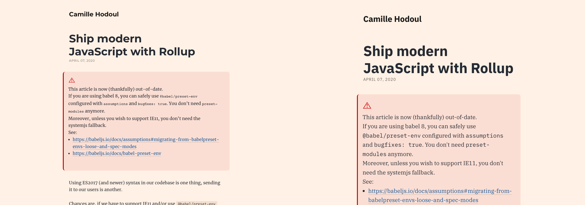
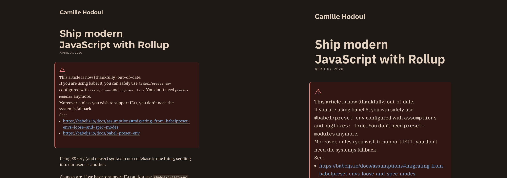
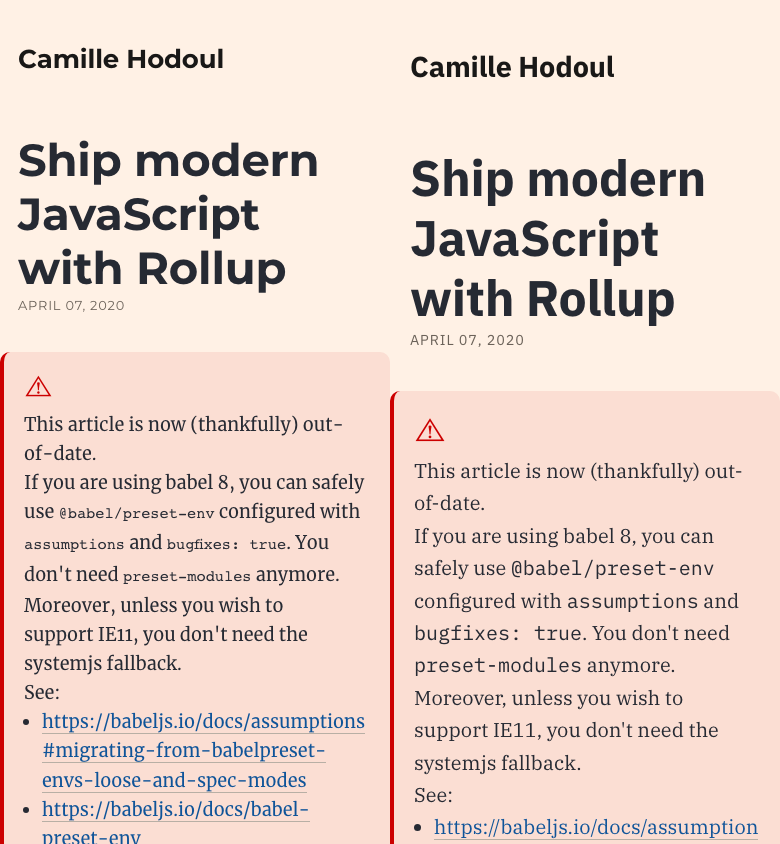
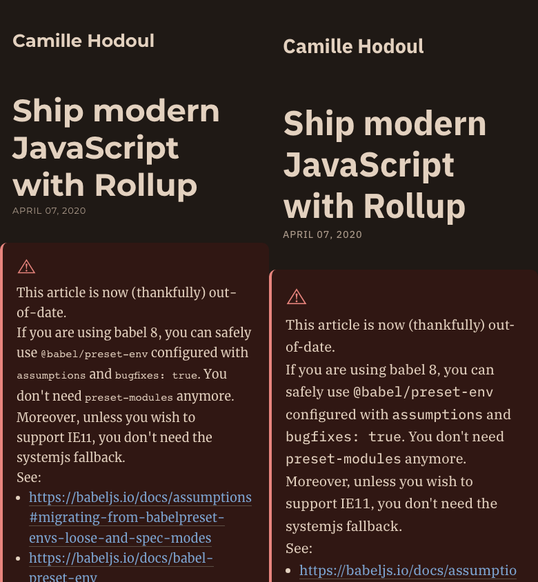

camillehdl.dev · Essai local · 16 octobre 2026
Le blog, avec IBM Plex
Merriweather, Montserrat et Fira Code face à Plex Serif, Sans et Mono. Le même article, les mêmes palettes, deux compositions à lire.
À 80 à 85 cm, commencer à 25 px
Le poste mesuré donne environ 0,233 mm par point logique macOS. Avec une hauteur d'x de 0,516 em, Plex à 25 px donne un angle d'environ 0,203° à 0,215°. Cela approche le seuil de 0,2° décrit par Legge et Bigelow. C'est un point de départ à essayer, pas une garantie individuelle.
Le calcul suppose un zoom du navigateur à 100 %, soit un pixel CSS par point logique de l'écran.
Les points macOS de la recherche ne sont pas des unités CSS pt.
L'option 30 px offre plus de marge, environ 0,243° à 0,258°.
Sur téléphone, cet essai utilise 20 px, ou 22 px avec le réglage plus grand.
Le texte Plex passe de 400 le jour à 450 la nuit, y compris le code et les labels. Les titres et le gras restent à 700. Plex Mono garde la taille du texte, car les trois familles Plex ont la même hauteur d'x.
Le code de référence conserve le rendu actuel. Les règles de taille à 0,85 em sur
pre et code se cumulent dans les blocs, soit environ 13,73 px sur bureau.
La variante Plex augmente donc aussi la taille du code. Les captures comparent ces compositions complètes.
Lire et changer de version
La référence garde ses réglages actuels, 19 px sur bureau et 18 px sur téléphone. Pour comparer le dessin des lettres, choisir « Hauteur d'x comparable ». Plex passe alors à 20,44 px sur bureau et 19,36 px sur téléphone. La colonne conserve sa largeur maximale de 722 px sur bureau.
Lire cette version en pleine page. L'aperçu se réduit à la largeur disponible. Les captures ci-dessous fixent les dimensions de référence.
Actuelle à gauche, Plex à droite
Captures Chromium par Playwright, zoom à 100 %, échelle 1. Chaque moitié mesure 1 280 × 900 px sur bureau ou 390 × 844 px sur mobile. Plex utilise le réglage distance, 25 px et 20 px. Le début du texte apparaît ici. Chaque lien ouvre la capture intégrale de l'article et de l'échantillon complémentaire.
Bureau · Clair


Voir l'article entier en clair sur bureauBureau · Sombre


Voir l'article entier en sombre sur bureauMobile · Clair


Voir l'article entier en clair sur mobileMobile · Sombre


Voir l'article entier en sombre sur mobileLes fichiers réellement chargés
Mesure sur cache vide pour chaque version, jusqu'au chargement de toutes les polices de l'article et de l'échantillon. Les tailles sont celles des corps WOFF2, hors en-têtes HTTP. Un Kio vaut 1 024 octets. Le total du dossier des polices actuelles n'est pas le poids d'une lecture.
| Rendu | Actuelle | IBM Plex |
|---|
L'article anglais ne contient pas d'italique. L'échantillon français ajouté après l'article déclenche les italiques et le gras italique. Il est identique dans les deux versions et reste hors du contenu d'origine.